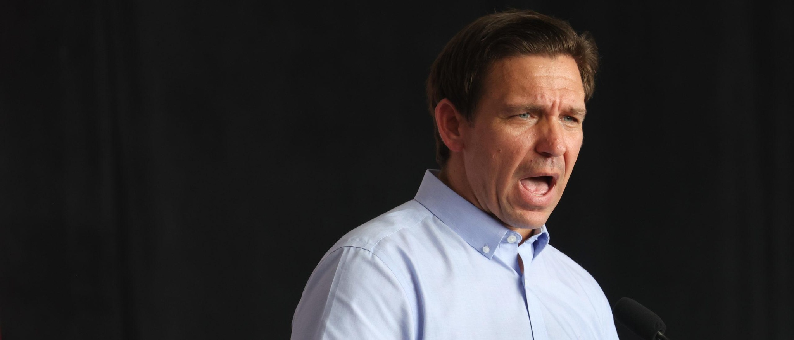

College Board Advises Florida Schools Against Teaching AP Psychology Over Gender IdeologyThe College Board, an academic organization that administers and writes the Advanced Placement (AP) curriculum, issued a statement on Thursday advising Florida schools not to teach AP Psychology. The organization says that the state has barred content regarding sexual orientation or gender identity in classrooms, effectively making it impossible to teach the course without modifications. They also state that they cannot censor or edit their curriculum to remove content. (RELATED: DeSantis-Ditched AP African-American Studies Course To Be Updated Next Month, National Organization Says) Read our full statement on AP Psychology and Florida: https://t.co/Y0NRrNCwBy pic.twitter.com/1Th1BhGTs8 — College Board (@CollegeBoard) August 3, 2023 “We are sad to have learned that today the Florida Department of Education has effectively banned AP Psychology in the state by instructing Florida superintendents that teaching foundational content on sexual orientation and gender identity is illegal under state law. The state has said districts are free to teach AP Psychology only if it excludes any mention of these essential topics,” College Board said in a statement. “As we shared in June, we cannot modify AP Psychology in response to regulations that would censor college-level standards for credit, placement, and career readiness. Our policy remains unchanged. Any course that censors required course content cannot be labeled ‘AP’ or ‘Advanced Placement,’ and the ‘AP Psychology’ designation cannot be utilized on student transcripts,” College Board continued. “To be clear, any AP Psychology course taught in Florida will violate either Florida law or college requirements. Therefore, we advise Florida districts not to offer AP Psychology until Florida reverses their decision and allows parents and students to choose to take the full course,” the organization added. The course in Advanced Placement Psychology asks students to, “describe how sex and gender influence socialization and other aspects of development,” according to the organization’s statement. The company previously agreed to remove certain topics from its AP African American Studies course. The company subsequently apologized for removing those topics and criticized the Florida government. Florida Gov. Ron DeSantis shot back by claiming the state would “reevaluate” its relationship with College Board. |
 |